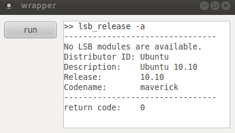

Re-direct Shell Outputs in wxpython
Refer this post to re-direct shell outputs in common python scripts. If using wxpython, more efforts are required to resolve the issue that wxWidget GUI does not receive any shell outputs until the child process is completed. Even if configuring the pipe as line buffered, the same problem persists.
# bufsize = 1 means line buffered task = subprocess.Popen(..., bufsize = 1, ...)
To display real-time shell outputs in wxpython, one solution is to embed GUI callback functions in threads. wxpython provides a function 'wx.CallAfter(...)' to enable this idea. For more details about 'wx.CallAfter(...)', google this function or refer to 'wxpython in action' examples. In short, the following source code demos how to implement the idea.
1 2 3 4 5 6 7 8 9 10 11 12 13 14 15 16 17 18 19 20 21 22 23 24 25 26 27 28 29 30 31 32 33 34 35 36 37 38 39 40 41 42 43 44 45 46 47 48 49 50 51 52 53 54 55 56 57 58 59 60 61 62 63 64 65 66 67 68 69 70 71 72 73 74 75 76 77 78 | #!/usr/bin/env python import wx import subprocess import threading class my_thread(threading.Thread): def __init__(self, wnd, cmd): threading.Thread.__init__(self) self.wnd = wnd self.cmd = cmd def run(self): wx.CallAfter(self.wnd.on_edt_set, self.cmd, None) # task assignment task = subprocess.Popen(self.cmd.split(' '), \ stdout = subprocess.PIPE, \ stderr = subprocess.STDOUT, \ shell = False) # line buffer reading while task.poll() is None: line = task.stdout.readline() wx.CallAfter(self.wnd.on_edt_add, line, None) # flush line = task.stdout.read() wx.CallAfter(self.wnd.on_edt_add, line, None) # return code wx.CallAfter(self.wnd.on_edt_line, None) rtn = 'return code:\t%d' %task.returncode wx.CallAfter(self.wnd.on_edt_add, rtn, None) # enable the button wx.CallAfter(self.wnd.on_btn_enb, None) frm_sz = (400, 200) btn_sz = (90, 30) edt_sz = (280, 180) class my_frame(wx.Frame): def __init__(self, parent, title): wx.Frame.__init__(self, parent = parent, title = title, size = frm_sz) self.panel = wx.Panel(self) self.btn_run = wx.Button(self.panel, size = btn_sz, label = 'run', \ pos = (10, 10)) self.btn_grp = [self.btn_run, ] self.edt_out = wx.TextCtrl(self.panel, size = edt_sz, \ pos = (110, 10), \ style = wx.TE_MULTILINE | wx.TE_READONLY) font = wx.Font(10, wx.MODERN, wx.NORMAL, wx.NORMAL, False, u'monospace') self.edt_out.SetFont(font) self.Bind(wx.EVT_BUTTON, self.on_btn_run, self.btn_run) self.Show(True) def on_btn_run(self, event): self.btn_run.Disable() thread = my_thread(self, 'lsb_release -a') thread.start() def on_edt_set(self, msg, event): line = '>> %s\n' %msg self.edt_out.SetValue(line) self.on_edt_line(None) def on_edt_add(self, msg, event): self.edt_out.AppendText(msg) def on_btn_enb(self, event): for btn in self.btn_grp: btn.Enable() def on_edt_line(self, event): line = '%s\n' %('-'*32) self.edt_out.AppendText(line) if __name__ == '__main__': app = wx.App() frame = my_frame(None, 'wrapper') app.MainLoop() |
Here is the result:
